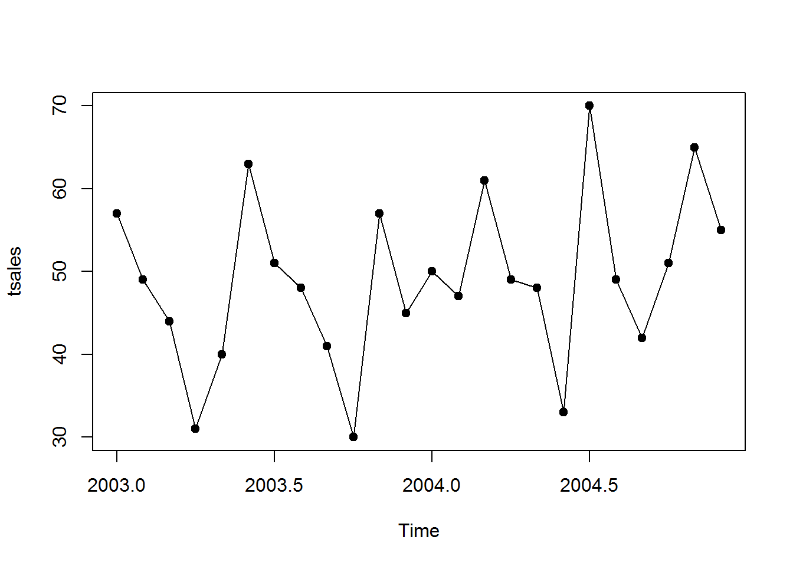
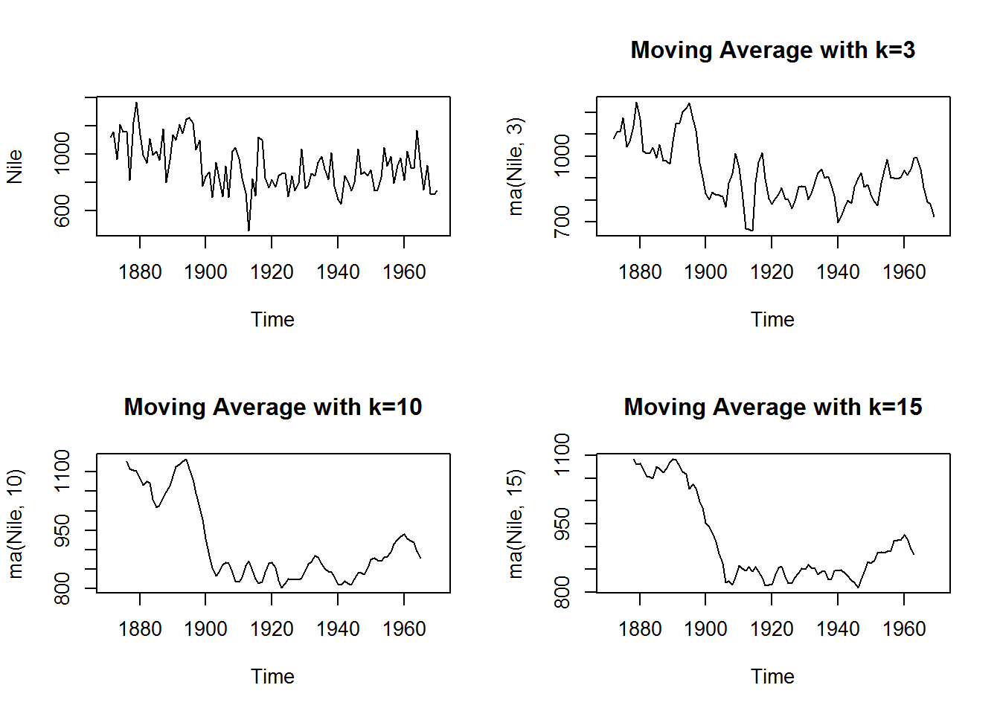
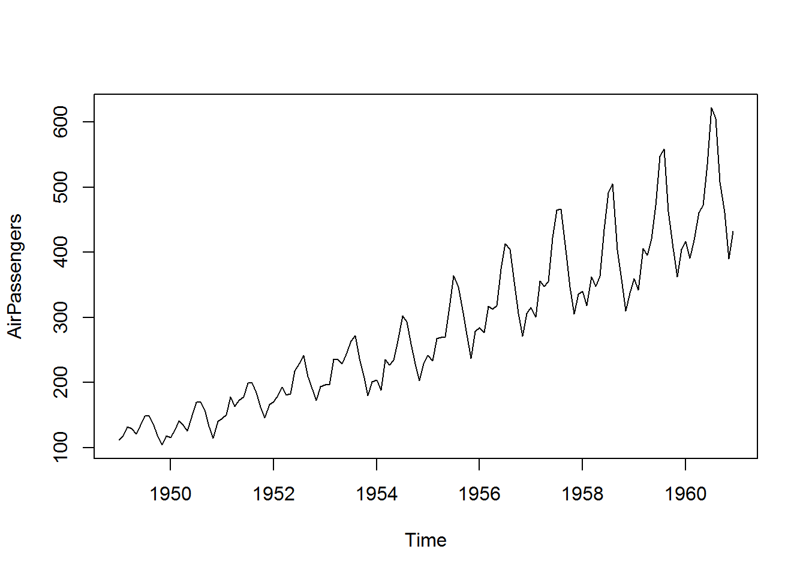
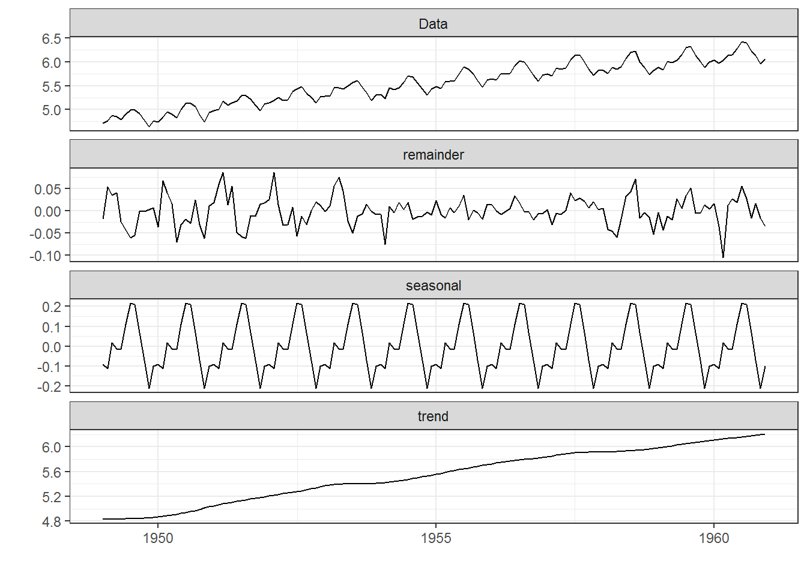
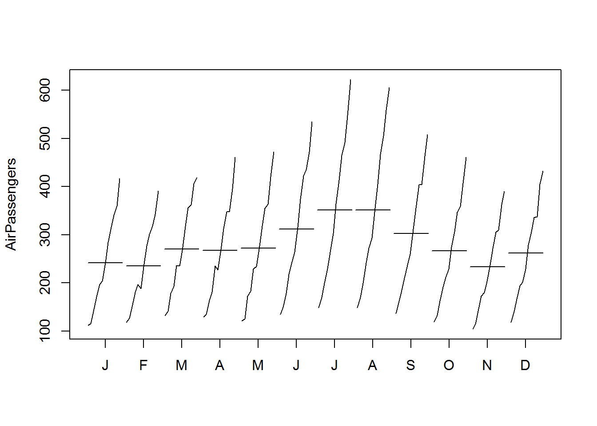
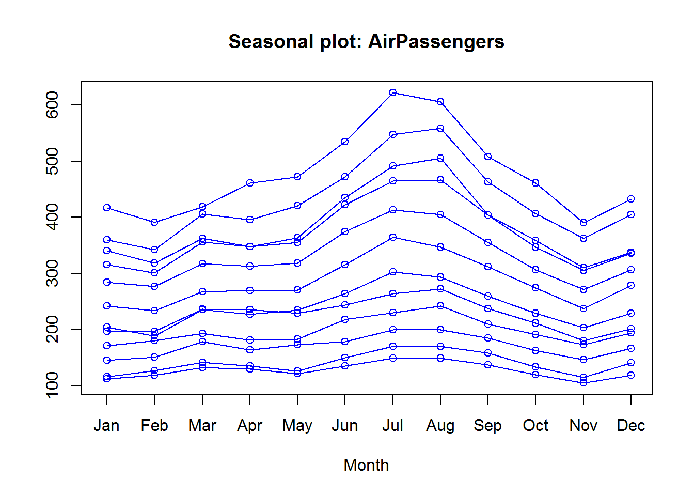
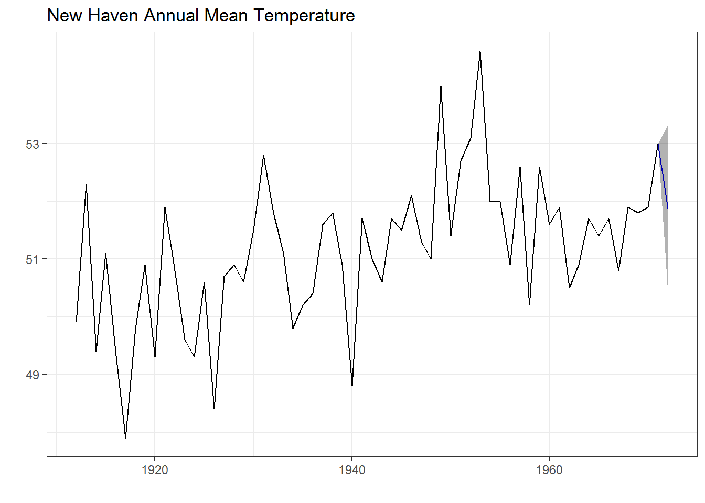
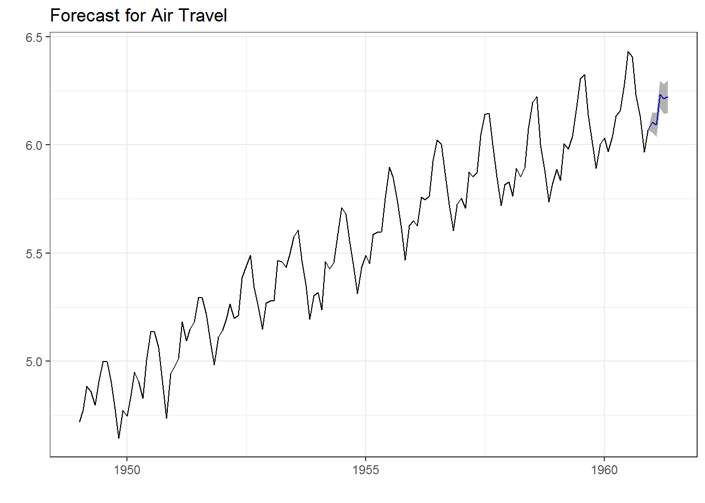
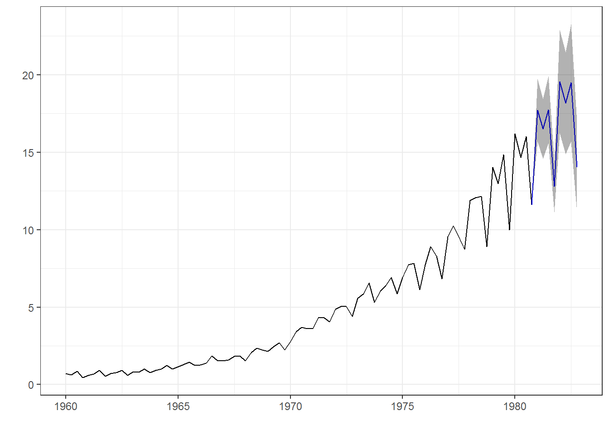

1. Giới thiệu về chuỗi thời gian¶
Khi phân tích dữ liệu, có hai khái niệm đều được gọi là dự báo khi
được dịch sang tiếng Việt, đó là forcast và predict. Tuy nhiên,
hai khái niệm này rất khác nhau.
- Predict: Thường được dùng để chỉ việc dự báo xác suất xảy ra các sự kiện. Ví dụ, xác suất vỡ nợ, xác suất khách hàng churn,…
- Forecast: Thường dùng trong việc dự báo chuỗi thời gian. Ví dụ, dựa vào lịch sử biến động của tổng khách hàng uống cafe theo tuần, ta có thể dự báo được số lượng khách hàng uống cafe của 1 tuần tới, hai tuần tới,…
Trong phần trước, chúng ta đã bàn nhiều về nhóm predict, trong phần
này, ta sẽ bàn thêm về nhóm forecast, về các cấu phần và cách thức
dự báo đối với chuỗi thời gian. Do đó, trong phần này, khi nói về dự
báo, chúng ta đang bàn về vấn đề forecast.
Phân biệt ``dự báo``, ``mục tiêu`` và ``kế hoạch``
Dự báo: là quá trình sử dụng các thông tin hiện hữu đưa ra các nhận định chính xác nhất có thể có trong tương lai trong một khoảng thời gian xác định về một chỉ số nào đó.
Mục tiêu: là thứ mà cá nhân, tổ chức mong muốn đạt được trong một khoảng thời gian xác định trong tương lai. Thường thì mục tiêu được đặt mà không quan tâm đến bất kỳ đến việc dự báo nào cả. Ví dụ, mục tiêu tăng trưởng của doanh nghiệp thường là năm sau cao gấp đôi năm trước trong khi dự báo chỉ có thể tăng được 30%.
Kế hoạch: Là phản ứng của tổ chức, cá nhân đối với dự báo và mục tiêu. Việc lập kế hoạch đòi hỏi nhiều hành động cụ thể để điều hướng dự báo sát sát với mục tiêu (hoặc vượt mục tiêu)
Xét về yếu tố thời gian, việc dự báo có thể chia thành dự báo ngắn hạn, trung hạn và dài hạn.
Các điểm khi dự báo
Khi dự báo, có hai điểm quan trọng chúng ta phải trả lời.
- Thứ nhất, ta cần dự báo điều gì? Dự báo với từng sản phẩm hay với cả nhóm sản phẩm? Dự báo doanh số bán hàng của từng cửa hàng hay của toàn hệ thống?
- Thứ hai, yếu tố thời gian xét trong vấn đề dự báo này là gì? Ta cần dự báo trong bao lâu? Tần xuất như thế nào? Ví dụ, dư báo doanh số bán hàng mỗi tháng/tuần 1 lần trong 1 năm tới?
Lưu ý: Các bạn phân tích dữ liệu cần phải tìm hiểu các đơn vị nghiệp vụ sẽ sử dụng kết quả dự báo như thế nào, để tránh việc bỏ quá nhiều thời gian và công sức dự báo nhưng không ai sử dụng.
1.1. Thành phần của chuỗi thời gian¶
Trong bất cứ chuỗi thời gian nào, cũng có 3 thành phần sau.
- Xu hướng (trend) thể hiện chiều hướng tăng hay giảm dài hạn của chuỗi thời gian
- Mùa vụ (seasonal) thể hiện sự biến đổi của chuỗi thời gian theo chu kỳ biết trước. Ví dụ, vào cuối tuần, khách hàng có xu hướng đi ăn nhà hàng nhiều hơn.
- Chu kỳ kinh doanh (cyclic) thể hiện xu hướng biến đổi dài hạn của chuỗi thời gian, thường ít nhất hai năm. Chu kỳ kinh doanh khác với yếu tố mùa vụ ở chỗ, chu kỳ biến đổi của yếu tố mùa vụ thường là đã được biết trước và mang tính ngắn hạn.
Khi phân tích chuỗi thời gian tập trung vào 2 câu hỏi:
- Cái gì đã xảy ra
- Cái gì sẽ xảy ra, với độ tin cậy bao nhiêu phần trăm
Phân tích chuỗi thời gian sử dụng rất nhiều trong việc dự báo tăng trưởng, lên kế hoạch. Mô hình này dùng rất nhiều trong Macroeconomics, Finance…
Lưu ý:
- Để phân tích chuỗi thời gian, R lưu object dưới dạng ts (time series)
- Chuỗi thời gian có 1 loạt các kỹ thuật và câu lệnh phân tích riêng biệt
1.2. Dữ liệu chuỗi thời gian¶
Khi lưu trữ trong R, chuỗi thời gian được lưu dưới dạng ts như sau.
#Tạo chuỗi thời gian
sales <- c(round(rnorm(24,50,10),0))
#Tạo object ts
tsales <- ts(sales, start = c(2003,1), frequency = 12)
tsales
## Jan Feb Mar Apr May Jun Jul Aug Sep Oct Nov Dec
## 2003 57 49 44 31 40 63 51 48 41 30 57 45
## 2004 50 47 61 49 48 33 70 49 42 51 65 55
#Các chỉ số cơ bản
#plot
plot(tsales, pch=19, type = "o")

#Thời điểm bắt đầu
start(tsales)
## [1] 2003 1
#Thời điểm kết thúc
end(tsales)
## [1] 2004 12
#Frequency
frequency(tsales)
## [1] 12
#Tạo subset
tsales.subset <- window(tsales, start = c(2003,9), end = c(2004,3))
tsales.subset
## Jan Feb Mar Apr May Jun Jul Aug Sep Oct Nov Dec
## 2003 41 30 57 45
## 2004 50 47 61
1.3. Smoothing¶
Centered Moving Average là kỹ thuật làm trơn để giảm đi các yếu tố gây nhiễu trong chuỗi thời gian.
\(S_t\) được gọi là giá trị làm trơn (smoothed value) tại thời điểm t, \(k=2q+1\) là số quan sát được lấy giá trị trung bình. k thường là giá trị lẻ.
Mô hình trên được gọi là Moving Average (MA)
library(forecast)
library(ggfortify)
par(mfrow=c(2,2))
plot(Nile)
plot(ma(Nile, 3), main = "Moving Average with k=3")
plot(ma(Nile, 10), main = "Moving Average with k=10")
plot(ma(Nile, 15), main = "Moving Average with k=15")

1.4. Seasonal decomposition¶
Bất kỳ mô hình times series nào cũng được cấu thành bởi ba yếu tố
- Trend: Xu hương phát triển theo thời gian
- Seasonal: Yếu tố chu kỳ
- Irregular component (error): Các yếu tố gây nhiễu
Mô hình chuỗi thời gian cơ bản có hai dạng:
- Additive: \(Y_t=Trend_t + Seasonal_t + Irregular_t\)
- Multiplicative: \(Y_t=Trend_t * Seasonal_t * Irregular_t\)
Do đó, để phân tích chuỗi thời gian, ta cũng cần bóc tách chuỗi thời gian thành 3 yếu tố như trên bằng hàm stl (Seasonal Decomposition of Time Series by Loess)
stl(ts, s.window = , t.window =)
Lưu ý:
- Hàm trên chỉ dùng được cho Additive model
- Đối với Multiplicative, ta cần biến đổi như sau;
- s.window: kiểm soát yếu tố thời vụ (seasonal) ảnh hưởng đên chuối thời gian thế nào. Nếu \(s.window="period"\) thì yếu tố thời vụ sẽ giống hệt nhau qua các năm
- t.window: kiểm soát yếu tố xu hướng (trend) thay đổi theo thời gian thế nào
library(dplyr)
par(mfrow=c(1,1))
#Mô hình có dạng Multiplicative
plot(AirPassengers)
#Chuyển sang dạng Additive
lAirPassengers <- log(AirPassengers)
plot(AirPassengers)

#Phân tích thành phần ts
fit <- stl(lAirPassengers, s.window = "period")
autoplot(fit) + theme_bw()

#Quay lại dữ liệu gốc
fit$time.series %>% head
## seasonal trend remainder
## [1,] -0.09164042 4.829389 -0.01924936
## [2,] -0.11402828 4.830368 0.05434477
## [3,] 0.01586585 4.831348 0.03558845
## [4,] -0.01402759 4.833377 0.04046325
## [5,] -0.01502478 4.835406 -0.02459053
## [6,] 0.10978976 4.838166 -0.04268143
fit$time.series %>% exp %>% head
## seasonal trend remainder
## [1,] 0.9124332 125.1344 0.9809347
## [2,] 0.8922327 125.2571 1.0558486
## [3,] 1.0159924 125.3798 1.0362293
## [4,] 0.9860703 125.6345 1.0412930
## [5,] 0.9850875 125.8897 0.9757094
## [6,] 1.1160434 126.2377 0.9582166
#Phân tích xu hướng theo tháng và seasonal
monthplot(AirPassengers)

seasonplot(AirPassengers, col = "blue", type = "o")

Lưu ý: Nhìn vào bảng, ta có thể có các nhận định sau:
- Tháng một, yếu tố thời vụ khiến khách hàng giảm 9% (seasonal=-0.091)
- Tháng bảy, yếu tố thời vụ khiến khách hàng tăng 21% (seasonal = 0.216)
1.5. Exponential Forecasting Model¶
Mô hình dạng này rất đơn giản nhưng có thể đưa ra các dự báo ngắn hạn khá chính xác. Có 3 dạng:
- Single Exponential Model (Simple Exponential Model)
- Double Exponential Model (Hold Exponential Model)
- Triple Exponential Model (Hold-Winters Exponential Model)
1.5.1. Single Exponential Model¶
Dự báo giá trị của \(Y_{t+1}\) (1-step ahead forecast) là:
với
,
,
,
:raw-latex:`\alpha `đo lường độ ảnh hưởng của các biến trước đó đến giá trị dự báo :math:`Y_{t+1}`:
- :raw-latex:`alpha `càng gần 1, các biến càng gần có trọng số càng lớn
- :raw-latex:`alpha `càng gần 0, các biến càng xa có trọng số càng lớn
library(forecast)
fit <- ets(y = nhtemp, model = "ANN")
fit
## ETS(A,N,N)
##
## Call:
## ets(y = nhtemp, model = "ANN")
##
## Smoothing parameters:
## alpha = 0.182
##
## Initial states:
## l = 50.2759
##
## sigma: 1.1263
##
## AIC AICc BIC
## 265.9298 266.3584 272.2129
forecast(fit,1)
## Point Forecast Lo 80 Hi 80 Lo 95 Hi 95
## 1972 51.87045 50.42708 53.31382 49.66301 54.0779
autoplot(forecast(fit, 1), xlab="Year",
ylab=expression(paste("Temperature (", degree*F,")",)),
main="New Haven Annual Mean Temperature") +
theme_bw()

accuracy(fit)
## ME RMSE MAE MPE MAPE MASE
## Training set 0.1460295 1.126268 0.8951331 0.2418693 1.748922 0.7512497
## ACF1
## Training set -0.00653111
Giải thích:
- \(\alpha=0.182\) cho thấy rất nhiều quan sát được tính đến trong mô hình.
- Độ chính xác của mô hình được tính bằng các chỉ số thông dụng sau
| Chỉ số | Viết tắt | Cách tính |
|---|---|---|
| Mean error | ME | \(mean(\epsilon_t)\) |
| Root mean squared error | RMSE | \(sqrt(mean(\epsilon_t ^2))\) |
| Mean absolute error | MAE | \(mean(\epsilon_t)\) |
| Mean percentage error | MPE | \(mean(100*\epsilon_t/ Y_t)\) |
| Mean absolute percentage error | MAPE | \(mean( 100*\epsilon_t /Y_t)\) |
ME (mean ), RMSE, MAE, MPE, MAPE, MASE
1.5.2. Hold & Holt-Winters exponential smoothing¶
Hold exponential smoothing
- \(\alpha\): Độ ảnh hưởng của các biến y trong quá khứ đến biến hiện tại
- \(\beta\): Độ ảnh hưởng của biến xu hướng trong quá khứ đến hiện tại
Hold-Winters exponential smoothing
- \(\alpha\): Độ ảnh hưởng của các biến y trong quá khứ đến biến hiện tại
- \(\beta\): Độ ảnh hưởng của biến xu hướng trong quá khứ đến hiện tại
- \(\gamma\): Độ ảnh hường của biến chu kỳ đến hiện tại
Lưu ý: Các ảnh hưởng của slope và chu kỳ (:raw-latex:`\beta `và :raw-latex:`gamma`) đến giá trị hiện tại được tính theo công thức giống như alpha
library(forecast)
library(dplyr)
fit <- ets(log(AirPassengers), model = "AAA")
fit
## ETS(A,A,A)
##
## Call:
## ets(y = log(AirPassengers), model = "AAA")
##
## Smoothing parameters:
## alpha = 0.6534
## beta = 1e-04
## gamma = 1e-04
##
## Initial states:
## l = 4.8022
## b = 0.01
## s=-0.1047 -0.2186 -0.0761 0.0636 0.2083 0.217
## 0.1145 -0.011 -0.0111 0.0196 -0.1111 -0.0905
##
## sigma: 0.0359
##
## AIC AICc BIC
## -208.3619 -203.5047 -157.8750
#Dự báo
pred <- forecast(fit, 5)
pred
## Point Forecast Lo 80 Hi 80 Lo 95 Hi 95
## Jan 1961 6.103667 6.057633 6.149701 6.033264 6.174070
## Feb 1961 6.093102 6.038107 6.148096 6.008995 6.177208
## Mar 1961 6.233814 6.171126 6.296502 6.137940 6.329688
## Apr 1961 6.213130 6.143591 6.282668 6.106780 6.319480
## May 1961 6.223273 6.147500 6.299047 6.107388 6.339159
autoplot(pred, main="Forecast for Air Travel",
ylab="Log(AirPassengers)", xlab="Time") +
theme_bw()

pred$mean <- exp(pred$mean)
pred$lower <- exp(pred$lower)
pred$upper <- exp(pred$upper)
p <- cbind(pred$mean, pred$lower, pred$upper)
dimnames(p)[[2]] <- c("mean", "Lo 80", "Lo 95", "Hi 80", "Hi 95")
p %>% head
## mean Lo 80 Lo 95 Hi 80 Hi 95
## [1,] 447.4958 427.3626 417.0741 468.5774 480.1365
## [2,] 442.7926 419.0991 407.0741 467.8256 481.6452
## [3,] 509.6958 478.7246 463.0988 542.6706 560.9814
## [4,] 499.2613 465.7230 448.8908 535.2148 555.2839
## [5,] 504.3514 467.5469 449.1637 544.0531 566.3198
class(p)
## [1] "mts" "ts" "matrix"
1.5.3. Tự động xây dựng mô hình¶
Hàm ets cho phép tự động lựa chọn mô hình tốt nhất theo phương pháp maximum likelihood.
library(forecast)
library(dplyr)
(fit <- ets(JohnsonJohnson))
## ETS(M,A,M)
##
## Call:
## ets(y = JohnsonJohnson)
##
## Smoothing parameters:
## alpha = 0.1481
## beta = 0.0912
## gamma = 0.4908
##
## Initial states:
## l = 0.6146
## b = 0.005
## s=0.692 1.2644 0.9666 1.077
##
## sigma: 0.0889
##
## AIC AICc BIC
## 166.6964 169.1289 188.5738
forecast(fit) %>% autoplot + theme_bw()
